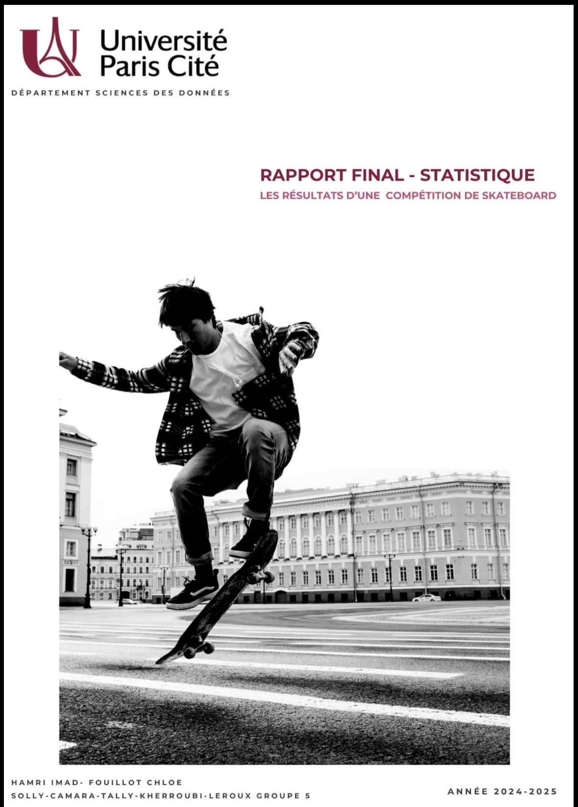
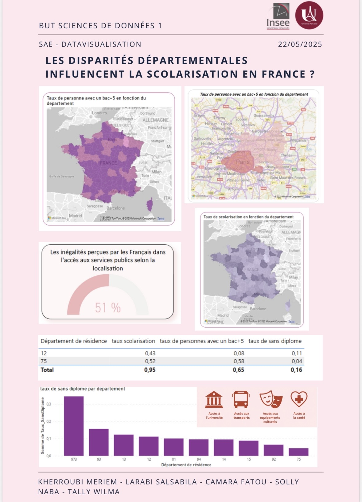
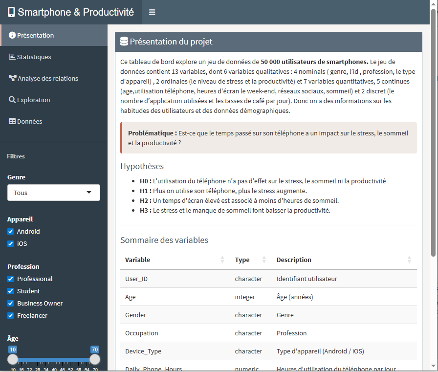

Dashboard décisionnel – CAF
Création d'un dashboard CAF pour visualiser les données internes et suivre les tendances. Automatisation du pipeline statistique avec SAS.
Voir →
Identification de tendances de consommation en année
Modélisation et prévision des données de production énergétique en biomasse avec analyse des séries temporelles en R.
Voir →
Rapport intéractif – Cancer du sein
Rapport R Markdown interactif pour explorer et visualiser des données sur le cancer du sein. Analyse statistique et synthèse des résultats.
Voir →
Rapport d'analyse des scores – Compétition de skateboard
Etude des performances des participants d'une compétition de skateboard afin d'identifier les facteurs pouvant être corrélés aux résultats obtenus par les participants. Analyse statistique et synthèse des résultats.
Voir →
Datavisualisation - Scolarisation en France
Etude des facteurs territoriaux affectant la scolarisation en France de scolarisation par départements. Analyse des disparités scolaires via des visualisation et mise en forme graphique et cartographique
Voir →
Dashboard intéractif- Scolarisation en France
Etude de l'impact du temps d'écran sur le stress, le sommeil et la productivité, avec application intéractive pour explorer les données selon son propre profile
Voir →